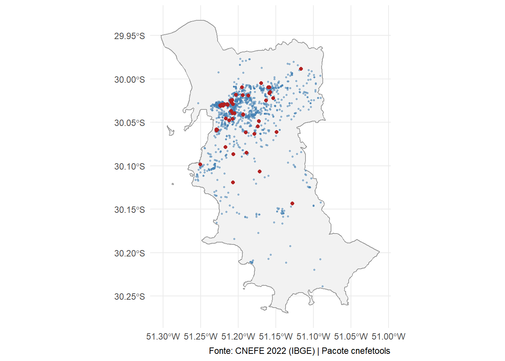
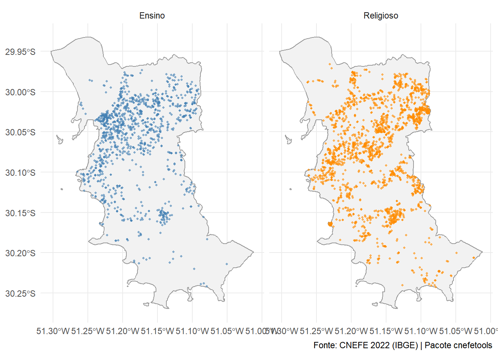
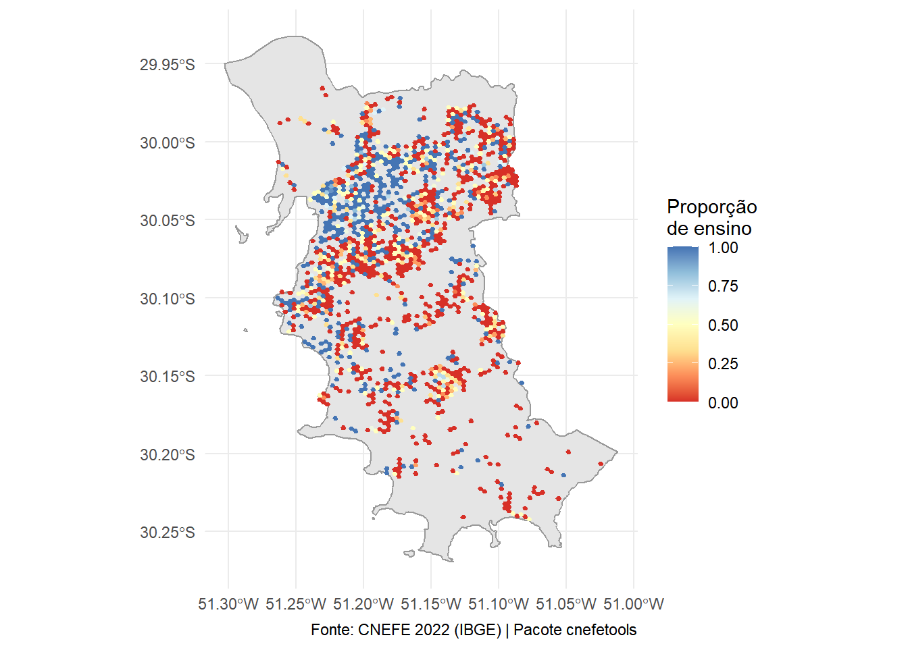

| Código | Descrição |
|---|---|
| 1 | Endereço — coordenada original do Censo 2022 |
| 2 | Endereço — coordenada modificada (apartamentos em mesmo número/face) |
| 3 | Endereço — coordenada estimada |
| 4 | Face de quadra |
| 5 | Localidade |
| 6 | Setor censitário |
10 CNEFE
10.1 Introdução
Para o IBGE, saber onde as pessoas estão é condição para fazer pesquisas. É preciso localizar os informantes, controlar operações de campo, selecionar amostras e enviar questionários. Sem um cadastro de endereços atualizado e abrangente, essas atividades simplesmente não funcionam. O Cadastro Nacional de Endereços para Fins Estatísticos (CNEFE), é a resposta institucional do IBGE a esse problema.
O CNEFE não é apenas um instrumento interno do instituto. Governos, empresas e pesquisadores utilizam seus dados para localizar serviços, avaliar cobertura de equipamentos públicos, apoiar a defesa civil em emergências e conduzir estudos acadêmicos. Quando enchentes devastaram o Rio Grande do Sul em 2024, o CNEFE foi uma das ferramentas mobilizadas para identificar endereços em áreas alagadas e apoiar as ações de socorro.
Este capítulo apresenta o CNEFE resultante do Censo Demográfico 2022 — a versão mais completa e precisa já publicada, com 106 milhões de endereços e coordenadas geográficas para praticamente todos eles. Veremos como o cadastro é construído, o que ele contém e como acessá-lo e analisá-lo com R por meio do pacote cnefetools.
10.2 Um breve histórico
O CNEFE tem origem nas operações do Censo Demográfico 2000, quando o IBGE mantinha registros de endereços em formulários de papel, de forma descentralizada e sem padronização nacional. Em 2005, o instituto formalizou o cadastro como produto permanente, criando um padrão unificado de registro e atribuindo à Gerência do Cadastro de Endereços a responsabilidade por sua manutenção.
A partir daí, o CNEFE foi progressivamente aprimorado a cada operação censitária. Em 2007, serviu de insumo para a Contagem Populacional. Em 2010, passou por melhorias significativas, foi associado pela primeira vez aos mapas digitais e teve seus dados divulgados publicamente — mas ainda com geocodificação restrita às áreas rurais. Em 2017, acompanhou o Censo Agropecuário. E em 2022, o cadastro deu um salto qualitativo importante: pela primeira vez, todos os endereços registrados receberam coordenadas geográficas individuais, tornando o CNEFE 100% georreferenciado.
Essa evolução reflete não apenas o avanço tecnológico dos dispositivos de coleta, mas também o amadurecimento institucional do IBGE na gestão de cadastros de endereços. Trabalhar com cadastros é, como o próprio instituto reconhece, uma atividade permanente — o mito de Sísifo, mas com sentido: produzir informações cada vez mais precisas sobre onde as pessoas vivem e trabalham.
10.3 Aspectos metodológicos da coleta
10.3.1 O trabalho dos recenseadores em campo
O CNEFE de 2022 é resultado direto do trabalho dos cerca de 120 mil recenseadores que percorreram o território brasileiro durante a realização do Censo. Para cada setor censitário, o recenseador carregava em seu dispositivo móvel uma lista prévia de endereços, construída a partir de operações anteriores do IBGE. Essa lista continha cerca de 89 milhões de registros.
Ao percorrer o setor, o recenseador tinha três tarefas em relação a cada endereço da lista prévia:
- Confirmar os endereços que ainda existiam (81,5% dos registros prévios foram confirmados);
- Incluir endereços novos que não constavam da lista (34 milhões de registros foram adicionados em campo, representando 31,8% da lista final);
- Excluir endereços que deixaram de existir ou haviam sido incluídos indevidamente (18,5% dos registros prévios foram excluídos).
O resultado final foi uma lista de 106 milhões de endereços, cobrindo a totalidade dos setores censitários do país.
10.3.2 A coleta de coordenadas com GNSS
A novidade mais importante do CNEFE 2022 em relação às edições anteriores é que todos os endereços, não apenas os rurais, receberam coordenadas geográficas individuais. Isso foi possível graças ao uso de dispositivos móveis de coleta equipados com receptor GNSS (Global Navigation Satellite System).
Para cada endereço confirmado ou incluído, o aplicativo de coleta exigia três tentativas de captura das coordenadas antes de permitir que o recenseador prosseguisse. As coordenadas eram registradas automaticamente pelo dispositivo e transmitidas ao sistema de acompanhamento do IBGE, o que permitia supervisionar a cobertura territorial em tempo real.
A precisão das coordenadas depende das condições locais de coleta. Em situação ideal, o erro quadrático médio (EQM) do receptor GNSS embarcado foi estimado em 5,84 metros. Em condições normais de campo, com edificações horizontais e áreas rurais, o erro chegou a 11,71 metros. Em condições adversas, como áreas com edificações verticais densas, vielas estreitas ou restrições de acesso (como condomínios fechados), o erro pode superar esse valor ou mesmo impossibilitar a captura.
10.3.3 Tratamento pós-coleta e níveis de geocodificação
Após a coleta, as coordenadas passaram por um processo de validação e correção. Os setores censitários foram agrupados em quatro categorias para definir os critérios de aceitação:
- Grupo 1: setores urbanos com alta densidade de edificações
- Grupo 2: setores urbanos com baixa densidade ou aglomerados rurais
- Grupo 3: setores rurais
- Grupo 4: agrupamentos indígenas
Para cada grupo, foram definidas distâncias máximas de aceitação das coordenadas coletadas: até 500 metros do contorno do setor para setores urbanos, 1.000 metros para rurais e 10.000 metros para indígenas. Coordenadas fora desses limites foram consideradas inválidas e submetidas a estimação.
Um tratamento especial foi aplicado aos apartamentos: como diferentes unidades de um mesmo edifício naturalmente geram coordenadas muito próximas entre si, com variação aleatória introduzida pelas condições do GNSS, o IBGE padronizou todas as unidades de um mesmo número e face de quadra para a coordenada mediana do conjunto.
Para as coordenadas inválidas ou ausentes, foi aplicada uma cadeia de estimações em ordem decrescente de precisão: coordenadas de questionários aplicados no mesmo endereço, endereços vizinhos na mesma face, registros históricos de operações anteriores, ponto médio da face de quadra e, por último, centroide do setor.
O resultado desse processo é representado pelo campo NV_GEO_COORD, que classifica cada registro em um de seis níveis:
Os resultados mostram a alta qualidade posicional do CNEFE 2022: 99,68% dos 111 milhões de registros foram geocodificados ao nível do endereço. Desses, 93,8% mantiveram a coordenada original coletada em campo, 5,5% receberam coordenada modificada pelo procedimento de padronização de apartamentos e apenas 0,7% foram estimados. Apenas 0,32% do total ficou em níveis de precisão menor (face de quadra, localidade ou setor).
10.4 Conteúdo e estrutura dos dados
10.4.1 As espécies de endereço
A variável mais relevante para análises temáticas do CNEFE é COD_ESPECIE, que classifica cada registro segundo a finalidade de uso do endereço. São oito categorias, cobrindo desde domicílios particulares até edificações em construção:
| Código | Espécie | Total |
|---|---|---|
| 1 | Domicílio particular | 90,6 milhões |
| 2 | Domicílio coletivo | 104 mil |
| 3 | Estabelecimento agropecuário | 4,1 milhões |
| 4 | Estabelecimento de ensino | 264 mil |
| 5 | Estabelecimento de saúde | 247,5 mil |
| 6 | Estabelecimento de outras finalidades | 11,7 milhões |
| 7 | Edificação em construção ou reforma | 3,5 milhões |
| 8 | Estabelecimento religioso | 579,8 mil |
Um número chama atenção: o Brasil tem mais templos religiosos (579,8 mil) do que estabelecimentos de ensino (264 mil) e de saúde (247,5 mil) somados. Essa informação, divulgada pelo IBGE em fevereiro de 2024 junto com a publicação do CNEFE, gerou ampla repercussão no debate público sobre a distribuição de equipamentos e serviços no país.
NotaUma espécie por endereço, mas um endereço pode ter múltiplas espécies
O CNEFE registra espécies, não endereços. Um mesmo endereço pode abrigar mais de uma espécie ao mesmo tempo — por exemplo, um terreno com uma casa e uma edificação em construção nos fundos. Por isso, o número total de espécies (111 milhões) é maior que o número de endereços (106 milhões).
10.4.2 Os campos do dicionário
A versão completa do CNEFE 2022 conta com 29 variáveis. Os campos se organizam em quatro grupos funcionais:
| Grupo | Variáveis |
|---|---|
| Localização geográfica | COD_UF, COD_MUNICIPIO, COD_DISTRITO, COD_SUBDISTRITO, COD_SETOR, NUM_QUADRA, NUM_FACE |
| Endereço textual | NOM_TIPO_SEGLOGR, NOM_SEGLOGR, NUM_ENDERECO, DSC_MODIFICADOR, NOM/VAL_COMP_ELEM1-5, CEP, DSC_LOCALIDADE |
| Coordenadas | LATITUDE, LONGITUDE, NV_GEO_COORD |
| Espécie e uso | COD_ESPECIE, DSC_ESTABELECIMENTO, COD_TIPO_ESPECIE, COD_INDICADOR_ESTAB_ENDERECO, COD_INDICADOR_CONST_ENDERECO, COD_INDICADOR_FINALIDADE_CONST |
| Identificador | COD_UNICO_ENDERECO |
O campo DSC_ESTABELECIMENTO merece atenção especial: para os registros que não são domicílios particulares, ele traz o nome do estabelecimento tal como coletado pelo recenseador. Apesar de ser texto livre e não padronizado, esse campo é muito útil para identificar tipos específicos de equipamentos por meio de busca por palavras-chave — hospitais, escolas, igrejas de determinadas denominações, entre outros.
O campo COD_TIPO_ESPECIE detalha o tipo de edificação dos domicílios: casa (101), casa de vila ou em condomínio (102), apartamento (103) e outros (104). Já COD_INDICADOR_FINALIDADE_CONST classifica as edificações em construção como residenciais (1), não residenciais (2), mistas (3) ou de finalidade indeterminada (4).
DicaOnde baixar os dados
Os dados do CNEFE 2022 estão disponíveis no portal do IBGE, organizados por município ou por unidade da federação, em arquivos .csv com campos separados por ponto e vírgula. O pacote cnefetools, apresentado na próxima seção, automatiza o download e a leitura desses arquivos diretamente no R.
10.5 Lendo dados do CNEFE com R
10.5.1 O pacote cnefetools
O pacote cnefetools foi desenvolvido para facilitar o acesso e a análise do CNEFE no R. Ele automatiza o download dos arquivos por município, cuida do cache local para evitar downloads repetidos e retorna os dados como objeto sf pronto para análise espacial.
Para instalar:
install.packages("cnefetools")As funções principais são:
read_cnefe()— lê os dados de um município como tabela Arrow ou objetosfcnefe_counts()— agrega contagens de endereços por espécie a células hexagonais H3 ou a polígonos definidos pelo usuáriocnefe_dictionary()— abre o dicionário de dados em Excelcnefe_doc()— abre a nota metodológica em PDF
10.5.2 Carregando os dados de Porto Alegre
A função read_cnefe() recebe o código IBGE do município e retorna um objeto sf com todos os registros do CNEFE. Para carregar os dados de Porto Alegre (código 4314902), fazemos:
poa_cnefe <- read_cnefe(
code_muni = 4314902,
cache = TRUE,
output = "sf",
verbose = FALSE
)Com os dados carregados, contamos os registros por espécie para ter uma visão geral do que está disponível:
poa_cnefe |>
sf::st_drop_geometry() |>
count(COD_ESPECIE) |>
mutate(
especie = case_when(
COD_ESPECIE == 1 ~ "Domicílio particular",
COD_ESPECIE == 2 ~ "Domicílio coletivo",
COD_ESPECIE == 3 ~ "Est. agropecuário",
COD_ESPECIE == 4 ~ "Est. de ensino",
COD_ESPECIE == 5 ~ "Est. de saúde",
COD_ESPECIE == 6 ~ "Est. de outras finalidades",
COD_ESPECIE == 7 ~ "Edificação em construção",
COD_ESPECIE == 8 ~ "Est. religioso"
)
) |>
select(COD_ESPECIE, especie, n) |>
knitr::kable(
col.names = c("Código", "Espécie", "Registros"),
format.args = list(big.mark = ".")
)Warning in prettyNum(.Internal(format(x, trim, digits, nsmall, width, 3L, :
'big.mark' and 'decimal.mark' are both '.', which could be confusing
Warning in prettyNum(.Internal(format(x, trim, digits, nsmall, width, 3L, :
'big.mark' and 'decimal.mark' are both '.', which could be confusing| Código | Espécie | Registros |
|---|---|---|
| 1 | Domicílio particular | 686.846 |
| 2 | Domicílio coletivo | 833 |
| 3 | Est. agropecuário | 128 |
| 4 | Est. de ensino | 1.194 |
| 5 | Est. de saúde | 1.592 |
| 6 | Est. de outras finalidades | 61.068 |
| 7 | Edificação em construção | 8.627 |
| 8 | Est. religioso | 1.951 |
10.5.3 Mapeando estabelecimentos de saúde
Uma das aplicações mais diretas do CNEFE é localizar equipamentos de saúde. Filtramos os registros com COD_ESPECIE == 5 e, dentro deles, buscamos os que têm “hospital” no nome do estabelecimento por meio do campo DSC_ESTABELECIMENTO:
poa_saude <- poa_cnefe |>
filter(COD_ESPECIE == 5)
poa_hospitais <- poa_saude |>
filter(grepl("hospital", DSC_ESTABELECIMENTO, ignore.case = TRUE))Para visualizar a distribuição espacial, usamos o limite municipal de Porto Alegre como camada de fundo e sobrepomos os dois conjuntos de pontos:
poa_muni <- read_municipality(
code_muni = 4314902,
year = 2022,
simplified = FALSE
)
ggplot() +
geom_sf(data = poa_muni, fill = "grey95", color = "grey60", linewidth = 0.4) +
geom_sf(data = poa_saude, color = "steelblue", size = 0.6, alpha = 0.5) +
geom_sf(data = poa_hospitais, color = "firebrick", size = 1.5) +
theme_minimal() +
labs(
x = NULL, y = NULL,
caption = "Fonte: CNEFE 2022 (IBGE) | Pacote cnefetools"
)
O mapa revela a distribuição desigual dos equipamentos de saúde: há maior concentração nas áreas centrais e ao longo dos principais eixos viários, com rarefação nas periferias da cidade.
NotaBuscas por texto no DSC_ESTABELECIMENTO
O campo DSC_ESTABELECIMENTO é texto livre coletado pelo recenseador. Isso significa que a mesma instituição pode aparecer grafada de formas diferentes em registros distintos — com abreviações, sem acentos ou com erros de digitação. Ao usar grepl() para filtrar por palavras-chave, vale testar variações da busca para não perder registros relevantes.
10.5.4 Comparando distribuições espaciais
Outra análise frequente com o CNEFE é comparar a localização de diferentes tipos de equipamento. O mapa a seguir mostra os estabelecimentos de ensino (espécie 4) e religiosos (espécie 8) em Porto Alegre em painéis separados, o que permite observar como suas distribuições se assemelham ou divergem ao longo do tecido urbano:
poa_edurel <- poa_cnefe |>
filter(COD_ESPECIE %in% c(4, 8)) |>
mutate(
tipo = factor(
ifelse(COD_ESPECIE == 4, "Ensino", "Religioso"),
levels = c("Ensino", "Religioso")
)
)
ggplot() +
geom_sf(data = poa_muni, fill = "grey95", color = "grey60", linewidth = 0.4) +
geom_sf(
data = poa_edurel,
aes(color = tipo),
size = 0.8,
alpha = 0.6
) +
scale_color_manual(
values = c("Ensino" = "steelblue", "Religioso" = "darkorange")
) +
facet_wrap(~tipo) +
theme_minimal() +
theme(legend.position = "none") +
labs(
x = NULL, y = NULL,
caption = "Fonte: CNEFE 2022 (IBGE) | Pacote cnefetools"
)
A comparação visual revela que os estabelecimentos religiosos têm distribuição mais dispersa pelo território municipal, enquanto os de ensino tendem a se concentrar mais próximos aos núcleos residenciais consolidados.
10.6 Agregando contagens com cnefe_counts()
10.6.1 A função cnefe_counts()
Ao analisar a distribuição espacial de endereços, muitas vezes queremos trabalhar com recortes espaciais em vez de pontos individuais. A função cnefe_counts() resolve isso: ela baixa os dados do CNEFE e os agrega a células hexagonais H3 ou a polígonos fornecidos pelo usuário, retornando a contagem de registros por espécie em cada unidade espacial.
Os principais argumentos são:
code_muni— código IBGE do municípiopolygon_type—"hex"para grade hexagonal H3 ou"user"para polígonos personalizadospolygon— objetosfcom os polígonos (obrigatório quandopolygon_type = "user")h3_resolution— resolução da grade H3 (padrão 9, células de aproximadamente 0,1 km²)backend— motor de processamento:"duckdb"(mais rápido) ou"r"(sem dependências extras)
O retorno é um objeto sf com oito colunas de contagem, uma por espécie (addr_type1 a addr_type8), além da geometria das células ou polígonos.
10.6.2 Mapeando a concentração de equipamentos por hexágono
Para identificar padrões intra-urbanos de distribuição de equipamentos de ensino e religiosos em Porto Alegre, usamos a grade hexagonal H3 com resolução 9. Antes de fazer os cálculos, precisamos agregar os dados:
poa_hex <- cnefe_counts(
code_muni = 4314902,
polygon_type = "hex",
h3_resolution = 9,
cache = TRUE,
verbose = FALSE
)Com a contagem por hexágono, calculamos a proporção de estabelecimentos de ensino em relação ao total de equipamentos educacionais e religiosos em cada célula. Células com valores próximos a 1 indicam predominância de ensino; próximas a 0, predominância religiosa:
poa_hex_ratio <- poa_hex |>
filter((addr_type4 + addr_type8) > 0) |>
mutate(prop_ensino = addr_type4 / (addr_type4 + addr_type8))
ggplot() +
geom_sf(data = poa_muni, fill = "grey90", color = "grey60", linewidth = 0.4) +
geom_sf(data = poa_hex_ratio, aes(fill = prop_ensino), color = NA) +
scale_fill_distiller(
palette = "RdYlBu",
direction = 1,
name = "Proporção\nde ensino",
limits = c(0, 1)
) +
theme_minimal() +
labs(
x = NULL, y = NULL,
caption = "Fonte: CNEFE 2022 (IBGE) | Pacote cnefetools"
)
O mapa revela variações espaciais expressivas. Nas áreas centrais e nos bairros com maior densidade urbana, a proporção de estabelecimentos de ensino tende a ser mais alta. Nas periferias, a presença de templos religiosos se torna relativamente mais pronunciada — padrão consistente com o que a literatura aponta sobre a expansão das igrejas evangélicas em territórios de urbanização mais recente.
10.6.3 Agregando por setor censitário
Quando o interesse é comparar os dados do CNEFE com outras variáveis do Censo, faz sentido agregar ao nível dos setores censitários. Para isso, usamos polygon_type = "user" e fornecemos o sf com os setores como argumento polygon:
# poa_setores <- read_census_tract(code_muni = 4314902, year = 2022)# poa_setor_counts <- cnefe_counts(
# code_muni = 4314902,
# polygon_type = "user",
# polygon = poa_setores,
# cache = TRUE,
# verbose = FALSE
# )A tabela resultante pode ser combinada com os agregados por setor (Capítulo 7) para análises que relacionam, por exemplo, a densidade de estabelecimentos de saúde com indicadores socioeconômicos da população residente.
DicaBackend DuckDB para grandes volumes
Para municípios menores, o argumento padrão backend = "duckdb" é a opção mais rápida. Se o DuckDB não estiver instalado, use backend = "r" para processar os dados inteiramente em R, sem dependências adicionais.
10.7 Exercícios
Cobertura de saúde em Salvador: Baixe os dados do CNEFE para Salvador (código 2927408) e filtre os estabelecimentos de saúde (
COD_ESPECIE == 5). Usecnefe_counts()com hexágonos para mapear a densidade desses estabelecimentos. Quais regiões da cidade apresentam menor concentração de equipamentos de saúde?Expansão imobiliária em Porto Alegre: Usando
COD_ESPECIE == 7(edificações em construção ou reforma), identifique as regiões de Porto Alegre com maior número de obras ativas. Filtre apenas as de finalidade residencial (COD_INDICADOR_FINALIDADE_CONST == 1) e mapeie sua distribuição. O padrão corresponde ao que você esperaria com base no conhecimento sobre a expansão urbana da cidade?Comparação entre cidades: Compare a razão entre estabelecimentos religiosos e de ensino em Belo Horizonte (3106200), Recife (2611606) e Porto Alegre (4314902). Use
cnefe_counts()com hexágonos e calcule, para cada cidade, a mediana da proporçãoaddr_type8 / (addr_type4 + addr_type8)entre os hexágonos com ao menos um estabelecimento de cada tipo. Qual das três cidades apresenta a maior proporção relativa de templos religiosos?